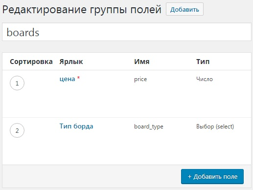
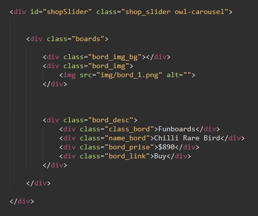
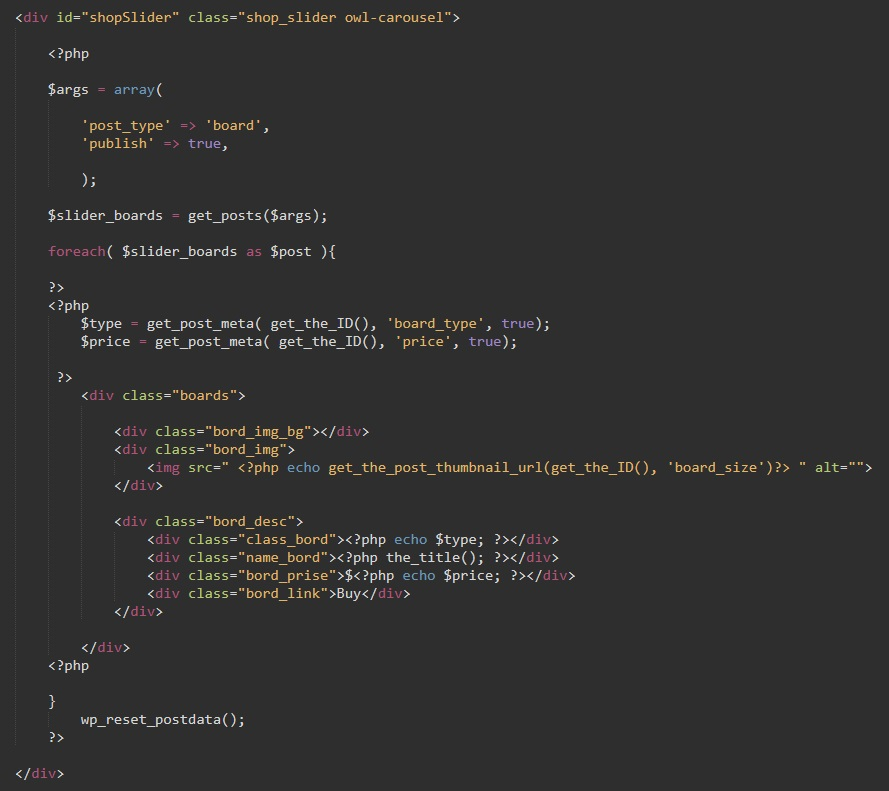

Допустим что в нашей верстке предусмотрен слайдер с возможными товарами и мы хотим добавлять товары в слайдер динамически. Т.е. в Wordpress добавляем элемент категории товара и он после публикации появляется в слайдере.
Будем исходить из того. что мы уже создали свой тип записи и настроили в нем возможность добавлять изображение. Так же мы установили плагин, для добавления произвольных полей. В примере мы добавили два произвольных поля, это цена товара (price) и тип (border_type)
Теперь перейдем к нашей верстке. Изначально она выглядела вот так:
У нас есть блок с идентификатором shopSlider и самое главное - с классом owl-carousel, именно этот класс и делает наш блок оберткой слайдера. (там еще указан класс - shop_slider, он используется для придания дополнительных стилей блоку со слайдером.)
Внутри нашего блока находится дочерний блок - boards - это и есть элемент слайдера (т.е. один слайд). Внутри этого блока у нас находятся элементы которые будут содержать данные товара. О них поговорим, когда будем заполнять их с помощью PHP
Первое что надо сделать это внутри блока-обертки слайдера открыть php код и объявить переменную args которая будет ассоциативным массивом. В этом массиве будет всего два элемента:
Выглядеть это будет так:
Затем необходимо создать переменную (имя сами придумываем), которая поместит в себя все наши посты. Помещать все имеющиеся посты будем с помощью функции get_posts() (не путать с get_post()). Входящим параметром функции get_posts() будет наша переменная-массив, которая содержит имя типа записи (board). Выглядиеть это будет вот так:
Ну а теперь запускаем цикл foreach. Внутрь цикла помещаем нашу верстку (т.е. блок boards)
После цикла foreach обязательно прерываем цыкл функцией:
Важно отметить то, что перед версткой мы прерываем код php, а после верстки снова его открываем.
Для заполнения информацией из поста мы используем стандартные функции php:
Теперь, как же нам обращаться к кастомным полям которые мы задавали с помощью плагина? Тут два пути. Либо через функцию the_field() (см. Произвольные поля записей в самом конце), либо более долгим путем:
В этом нам поможет функция get_post_meta. Как это выглядит:
В переменную $type с помощью функции get_post_meta мы помещаем значение кастомного поля. Как функция понимает какое именно нам нужно поле. Очень просто, входящим параметром это функции являются:
Теперь в верстке где должны выводиться данные произвольных поле просто вписываем код php:
Вот как теперь выглядит верстка нашей карусели:
